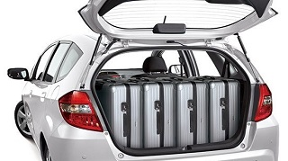
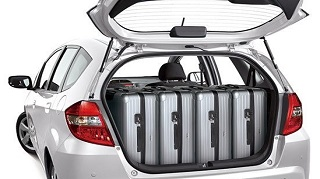

介紹
引擎型式：自然進氣、直列四缸、SOHC、16氣門 排氣量：1497cc 最大馬力：120hp@6600rpmbr> 最大扭力：14.8kgm@4800rpm 驅動型式：前輪驅動 變速系統：5速自手排 平均油耗：14.5km/ltr
配置
倒車輔助系統、定速巡航、電動折疊後照鏡、電動窗防夾功能
價格&花費
新車價：67萬 二手價：34萬 牌照稅：7120元 燃料費：4800元
優、缺點
優點：享受駕駛樂趣、空間大、省油、妥善率高 缺點：隔音較差、後座舒適度較差
通病
容易生鏽、煞車卡鉗易鎖死、底盤噪音明顯
 
